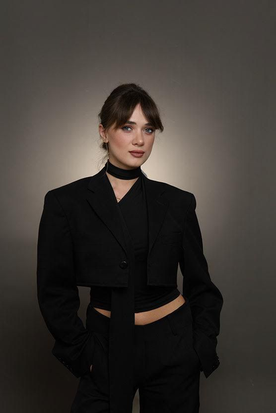

About
Mariam Nishnianidze
Architect & Interior Designer
Based in Tbilisi, Georgia
I believe people return to places because of how they feel, not only how they look. My work explores atmosphere, materiality, and emotion to create hospitality spaces that stay in memory long after people leave.
Selected Services
- Hospitality & Retail Interiors
- Interior Concept Design
- Space Planning & Layout
- 3D Visualization
- Technical Documentation
